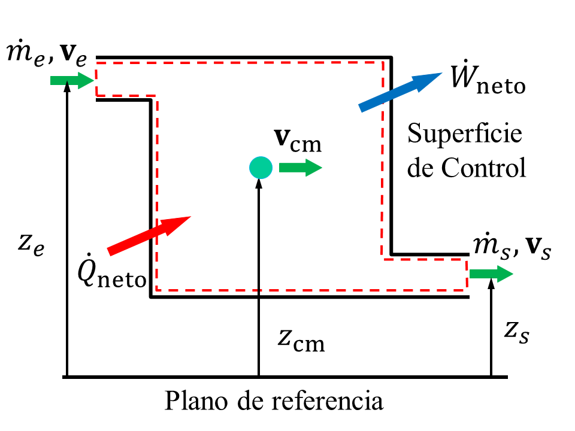
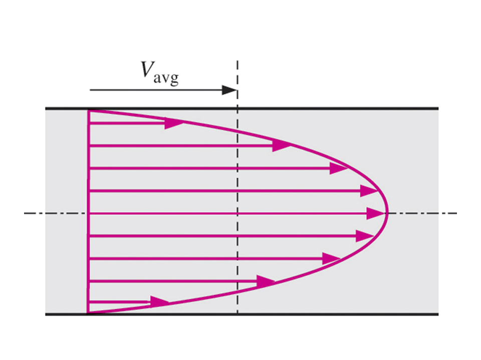
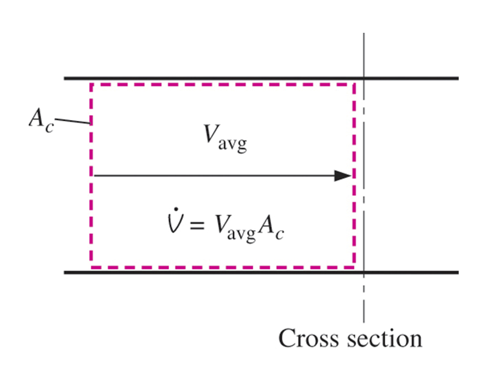
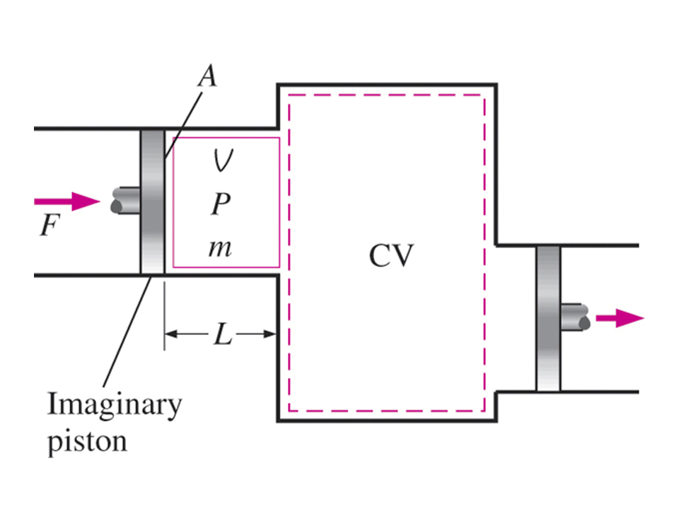

Revisa la Bibliografía recomendada en la sección Fuentes de Información del curso.
Notas para la clase.
La Primera Ley de la Termodinámica. Volúmenes de Control
Los principios de conservación de la masa y de la energía para sistemas abiertos o volúmenes de control se aplican a sistemas cuya masa cruza la frontera del sistema o la superficie de control. Además de la transferencia de calor y el trabajo que cruzan las fronteras del sistema, la masa transporta energía cuando cruza estas fronteras; por lo tanto, el contenido de masa y energía del sistema abierto puede cambiar cuando la masa entra o sale del volumen de control, como se muestra en la figura siguiente.

Los procesos termodinámicos que involucran volúmenes de control se pueden considerar en dos grupos: procesos de flujo estacionario y procesos de flujo no estacionario. Durante un proceso de flujo estacionario, el fluido fluye a través del volumen de control de manera constante, sin experimentar cambios con el tiempo en un punto fijo dentro del volumen de control.
Razón de flujo másico
El flujo másico a través de un área de sección transversal por unidad de tiempo se denomina tasa o razón de flujo másico, $\dot{m}$, y se expresa como
$$ \dot{m} = \int_A \rho\;v_n d A $$donde $v_n$ es la velocidad normal al área de flujo de la sección transversal.


Si la densidad y la velocidad del fluido son constantes sobre el área de la sección transversal del flujo, la razón de flujo másico es
$$ \dot{m} = \rho v_{\text{prom}} A = \frac{v_{\text{prom}} A}{\nu} $$
donde $\rho$ es la densidad, $\left[ \displaystyle{\frac{\text{kg}}{\text{m}^3}}\right] $ $\left( \rho = \displaystyle{\frac{1}{\nu}} \right)$, $A$ es el área de la sección transversal, $\left[ \text{m}^2\right] $, y $v_{\text{prom}}$ es la velocidad promedio del fluido normal al área, $\left[ \displaystyle{\frac{\text{m}}{\text{s}^2}}\right] $.
Conservación de la masa para el volumen de control
El principio de conservación de la masa para el sistema abierto o volumen de control se expresa como
$$ \sum \dot{m}_e -\sum \dot{m}_s = \Delta \dot{m}_{sist} \qquad \left[ \frac{\text{m}}{\text{s}}\right] $$Conservación de energía para el volumen de control
El principio de conservación de energía para el volumen de control o sistema abierto tiene la misma definición de palabra que la primera ley para el sistema cerrado. Expresando las transferencias de energía en base a la tasa, la primera ley para el volumen de control es
$$\underbrace{\dot{E}_e - \dot{E}_s}_{\begin{array} {c} \text{Razón neta de} \\ \text{transferencia de energía} \\ \text{por calor, trabajo, masa} \end{array}} = \underbrace{\Delta \dot{E}_{sist}}_{ \begin{array} {c} \text{Razón de cambio} \\ \text{de energía interna,} \\ \text{cinética, potencial} \end{array} } \qquad \left[ \text{kW} \right] $$Considerando que la energía fluye hacia y desde el volumen de control con la masa, la energía entra porque el calor neto se transfiere al volumen de control y la energía sale porque el volumen de control realizando un trabajo neto sobre su entorno, para el sistema abierto o volumen de control la primera ley se convierte en
$$\dot{Q} - \dot{W} + \sum \underbrace{\dot{m}_e \theta_e}_{\text{para cada entrada}} - \sum \underbrace{\dot{m}_s \theta_s}_{\text{para cada salida}} = \frac{d E_{\text{VC}}}{d t} \qquad \left[ \text{kW} \right] $$donde $\theta$ es la energía por unidad de masa que fluye a través de las fronteras hacia o desde el volumen de control se compone de cuatro términos, la energía interna, la energía cinética, la energía potencial y el trabajo de flujo.

A medida que el fluido aguas arriba empuja la masa a través de la superficie de control, el trabajo realizado en esa unidad de masa es
$$ \delta W_{flujo} = F \; dL = F\; dL \frac{A}{A} = \frac{F}{A} (A \; dL) = p dV = p v \delta m $$ $$ \delta w = \frac{\delta W}{\delta m} = p v $$El término $p v$ se denomina trabajo de flujo realizado en la unidad de masa cuando cruza la superficie de control. La energía total transportada por una unidad de masa cuando cruza la superficie de control es
$$ \theta = u + p v + \frac{v^2}{2} + g z $$ $$ \theta = h + \frac{v^2}{2} + g z $$Aquí hemos usado la definición de entalpía, $h = u + p v$.
$$\dot{Q} - \dot{W} + \sum \underbrace{\quad \dot{m}_e (h_e + \frac{v_e^2}{2} + g z_e) \quad}_{\text{para cada entrada}} - \sum \underbrace{\quad \dot{m}_s (h_s + \frac{v_s^2}{2} + g z_s) \quad}_{\text{para cada salida}} = \frac{d E_{\text{VC}}}{d t} \qquad \left[ \text{kW} \right] $$donde la razón de cambio de la energía con respecto al tiempo en el volumen de control se ha escrito como $\displaystyle{\frac{d E_{\text{VC}}}{d t}}$.
Procesos de estado estacionario y flujo estacionario
La mayoría de los dispositivos de conversión de energía funcionan de manera constante durante largos períodos de tiempo. Las tasas de transferencia de calor y trabajo que cruzan la superficie de control son constantes con el tiempo. Los estados de las corrientes de masa que cruzan la superficie de control o frontera son constantes en el tiempo. En estas condiciones, el contenido de masa y energía del volumen de control es constante en el tiempo.
$$ \frac{d m_{VC}}{d t} = \Delta \dot{m}_{VC} = 0 $$ $$ \frac{d E_{VC}}{d t} = \Delta \dot{E}_{VC} = 0 $$Conservación de la masa en estado estacionario y flujo estacionario
dado que la masa del volumen de control es constante con el tiempo durante el proceso de estado estacionario y flujo estacionario, el principio de conservación de la masa se convierte en
$$ \sum \dot{m}_e = \sum \dot{m}_s \qquad \left[ \frac{\text{kg}}{\text{s}} \right] $$Conservación de la masa en estado estacionario y flujo estacionario
Dado que la energía del volumen de control es constante con el tiempo durante el proceso de estado estacionario y flujo estacionario, el principio de conservación de la energía se convierte en
$$\underbrace{\quad \dot{E}_e - \dot{E}_s \quad}_{\begin{array} {c} \text{Razón neta de} \\ \text{transferencia de energía} \\ \text{por calor, trabajo, masa} \end{array}} = \underbrace{\quad \Delta \dot{E}_{sist}\quad}_{ \begin{array} {c} \text{Razón de cambio} \\ \text{de energía interna,} \\ \text{cinética, potencial} \end{array} } = 0 \qquad \left[ \text{kW} \right]$$o
$$\underbrace{\qquad \dot{E}_e \qquad}_{\begin{array} {c} \text{Razón neta de} \\ \text{transferencia de energía} \\ \text{que entra por calor} \\ \text{trabajo, masa} \end{array}} = \underbrace{\qquad \dot{E}_s \qquad}_{ \begin{array} {c} \text{Razón neta de} \\ \text{transferencia de energía} \\ \text{que sale por calor} \\ \text{trabajo, masa} \end{array} } \qquad \left[ \text{kW} \right] $$Considerando que la energía fluye hacia y desde el volumen de control con la masa, la energía entra porque el calor se transfiere al volumen de control y la energía sale porque el volumen de control realiza trabajo sobre su entorno, la primera ley de estado estacionario y flujo estacionario se convierte en
$$ \dot{Q}_e - \dot{W}_e + \sum \underbrace{\quad \dot{m}_e (h_e + \frac{v_e^2}{2} + g z_e) \quad}_{\text{para cada entrada}} = \dot{Q}_s - \dot{W}_s + \sum \underbrace{\quad \dot{m}_s (h_s + \frac{v_s^2}{2} + g z_s) \quad}_{\text{para cada salida}} $$La mayoría de las veces escribimos este resultado como
$$ \dot{Q}_{neto} - \dot{W}_{neto} = \sum \underbrace{\quad \dot{m}_s (h_s + \frac{v_s^2}{2} + g z_s) \quad}_{\text{para cada salida}} - \sum \underbrace{\quad \dot{m}_e (h_e + \frac{v_e^2}{2} + g z_e) \quad}_{\text{para cada entrada}} $$dónde
$$ \dot{Q}_{neto} = \sum \dot{Q}_e - \sum \dot{Q}_s \qquad \text{y} \qquad \dot{W}_{neto} = \sum \dot{W}_s - \sum \dot{W}_e $$Estado estacionario, flujo estacionario para una entrada y una salida
Varios dispositivos termodinámicos como bombas, ventiladores, compresores, turbinas, boquillas, difusores y calentadores funcionan con una entrada y una salida. La conservación de la masa en estado estacionario y flujo estacionario y la primera ley de la termodinámica para estos sistemas se reducen a
$$ \dot{m}_1 = \dot{m}_2 $$ $$ \frac{1}{v_1} v_1 A_1 = \frac{1}{v_2} v_2 A_2 $$ $$ \dot{Q}_{neto} - \dot{W}_{neto} = \dot{m}_2 (h_2 + \frac{v_2^2}{2} + g z_2) - \dot{m}_1 (h_1 + \frac{v_1^2}{2} + g z_1) $$o
$$ \dot{Q}_{neto} - \dot{W}_{neto} = \dot{m} (h_2 - h_1 + \frac{v_2^2}{2} - \frac{v_1^2}{2} + g z_2 - g z_1) $$donde la entrada es el estado $1$ salida es el estado $2$, y $\dot{m}$ es el flujo másico a través del dispositivo.
Cuando se pueden despreciar las energías cinética y potencial, la ecuación de conservación de la energía se convierte en
$$ \dot{Q}_{neto} - \dot{W}_{neto} = \dot{m} (h_2 - h_1) $$A menudo escribimos este último resultado por unidad de flujo másico como
$$ q - w = h_2 -h_1 $$dónde
$$ q = \frac{\dot{Q}}{\dot{m}} \qquad \text{y} \qquad w = \frac{\dot{W}}{\dot{m}} $$